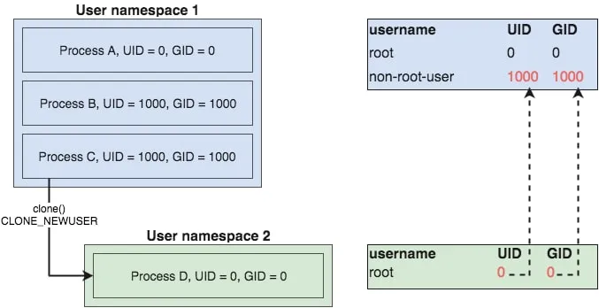
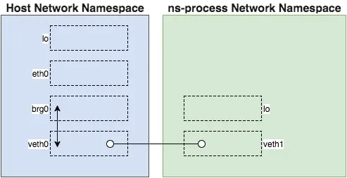

笔记参考来源: https://github.com/teddyking/ns-process
1. 使用unshare
unshare用来在新的名字空间里面run另外一个program
$ sudo su # become root user
$ hostname # check current hostname
dev-ubuntu
$ unshare -u /bin/sh # create a shell in new UTS namespace
$ hostname my-new-hostname # set hostname
$ hostname # confirm new hostname
my-new-hostname
$ exit # exit new UTS namespace
$ hostname # confirm original hostname unchanged
dev-ubuntu
上面的例子中, unshare -u使用了新UTS空间来run一个shell程序, 在里面改hostname并不会改外面的hostname
1.1. 名字空间种类
- Mount - isolate filesystem mount points
- UTS - isolate hostname and domainname
- IPC - isolate interprocess communication (IPC) resources
- PID - isolate the PID number space
- Network - isolate network interfaces
- User - isolate UID/GID number spaces
Cgroup - isolate cgroup root directory
大部分unshare的名字空间需要sudo权限, 但User例外
1.2. mount名字空间
whoami #返回root, 在里面认为自己是root
sudo unshare -m /bin/sh #在新的mount空间运行shell
ls / #在新的空间能看到外面的root
ls /proc #也能看到外面的proc
cat /proc/mounts #在里面看到的mounts和外面一样, 但外面修改的mount不会体现在里面
mkdir test
mount -o bind /dev test #在里面mount不需要sudo, 因为自己就是root; 而且在外面也看不到
为什么mount名字空间能够"继承"父进程的mounts呢? man mount_namespaces解释了这个行为似乎是有意为之.
“When a process creates a new mount namespace using clone(2) or unshare(2) with the CLONE_NEWNS flag, the mount point list for the new namespace is a copy of the caller’s mount point list.”
1.3. 相关的syscall
有三个相关的syscall
- clone: 创建新的进程, 支持CLONE_NEWNS CLONE_NEWPID等flag
- setns: 让calling进程加入一个已经存在的namespace
- unshare: 把calling进程放到一个新的namespace
2. go运行新的名字空间
"os/exec"和"syscall"本身就支持了在新的名字空间运行子进程. 比如下面的例子
# Git repo: https://github.com/teddyking/ns-process
# Git tag: 1.0
# Filename: ns_process.go
package main
import (
"fmt"
"os"
"os/exec"
"syscall"
)
func main() {
cmd := exec.Command("/bin/sh")
cmd.Stdin = os.Stdin
cmd.Stdout = os.Stdout
cmd.Stderr = os.Stderr
cmd.Env = []string{"PS1=-[ns-process]- # "}
cmd.SysProcAttr = &syscall.SysProcAttr{
Cloneflags: syscall.CLONE_NEWUTS,
}
if err := cmd.Run(); err != nil {
fmt.Printf("Error running the /bin/sh command - %s\n", err)
os.Exit(1)
}
}
重点是在cmd.Run()之前, 用cmd.SysProcAttr来设置新的子进程的名字空间的属性
SysProcAttr.Cloneflags会在cmd.Run()执行clone()系统调用的时候传入.
2.1. 更加完整的的名字空间
上面的例子只有UTS空间, 也可以把所有的名字空间都加上. 这样新的子进程就能运行在一个完整隔离的空间了.
cmd.SysProcAttr = &syscall.SysProcAttr{
Cloneflags: syscall.CLONE_NEWNS |
syscall.CLONE_NEWUTS |
syscall.CLONE_NEWIPC |
syscall.CLONE_NEWPID |
syscall.CLONE_NEWNET |
syscall.CLONE_NEWUSER,
}
这个例子其实还不够实际使用
CLONE_NEWNS只是隔离的子进程以后的mount, 当下的子进程还是继承了父进程的mount. 子进程能看到"外面的"root和mountCLONE_NEWPID需要自己来mount/procCLONE_NEWNET需要额外配置network interfaceCLONE_NEWUSER需要UID/GID mapping
2.2. USER名字空间
带USER的名字空间不需要root权限, 比如直接运行unshare -m会报权限错误:
$ unshare -m /bin/sh
unshare: unshare(0x20000): Operation not permitted
但加了-U就不会报错了:
$ unshare -Um /bin/sh
$ whoami
nobody
在里面显示user是nobody, 并不是之前的root. 这样虽然启动unshare不用sudo, 但里面的程序只有nobody权限.
下面的图表示了在用户名字空间1里的一个非root权限进程C, 创建了一个新的USER名字空间2, 在用户名字空间2里面, 进程D以为自己是root.
但这个root实际上是进程C的UID为1000的用户.

用下面的代码可以把当前用户map到新名字空间的root用户
# Git repo: https://github.com/teddyking/ns-process
# Git tag: 2.0
# Filename: ns_process.go
# ...
cmd.SysProcAttr = &syscall.SysProcAttr{
Cloneflags: syscall.CLONE_NEWNS |
syscall.CLONE_NEWUTS |
syscall.CLONE_NEWIPC |
syscall.CLONE_NEWPID |
syscall.CLONE_NEWNET |
syscall.CLONE_NEWUSER,
UidMappings: []syscall.SysProcIDMap{
{
ContainerID: 0,
HostID: os.Getuid(),
Size: 1,
},
},
GidMappings: []syscall.SysProcIDMap{
{
ContainerID: 0,
HostID: os.Getgid(),
Size: 1,
},
},
}
# ...
注意这里用到了syscall.SysProcIDMap这个结构体, ContainerID为0表示里面的root, HostID是外面的user id.
用unshre -r也可以达到同样的效果, -r的意思是
Map current user to root (implies -U)
2.3. 创建全新的mount名字空间
如前面所说, mount名字空间继承了父进程的mount点.
要创建全新的mount名字空间, 需要pivot_root系统调用的配合.
go的syscall标准库提供了
func PivotRoot(newroot string, putold string) (err error)
其中
newroot和putold必须是目录- 他们必须不能是在当前root下的mount点. 后面会用
bindmount来解决这个限制 putold必须是在newroot下面的目录putold不能是其他挂载点
下面的go代码演示了
- 先用
bind mount来挂载newroot目录 - 然后用
PivotRoot来切换root目录 再后用
Umount来卸载old root# Git repo: https://github.com/teddyking/ns-process # Git tag: 4.0 # Filename: rootfs.go func pivotRoot(newroot string) error { putold := filepath.Join(newroot, "/.pivot_root") // bind mount newroot to itself - this is a slight hack // needed to work around a pivot_root requirement if err := syscall.Mount( newroot, newroot, "", syscall.MS_BIND|syscall.MS_REC, "", ); err != nil { return err } // create putold directory if err := os.MkdirAll(putold, 0700); err != nil { return err } // call pivot_root if err := syscall.PivotRoot(newroot, putold); err != nil { return err } // ensure current working directory is set to new root if err := os.Chdir("/"); err != nil { return err } // umount putold, which now lives at /.pivot_root putold = "/.pivot_root" if err := syscall.Unmount( putold, syscall.MNT_DETACH, ); err != nil { return err } // remove putold if err := os.RemoveAll(putold); err != nil { return err } return nil }
上面的代码要在新的mount名字空间里运行:
# Git repo: https://github.com/teddyking/ns-process
# Git tag: 4.0
# Filename: ns_process.go
func nsInitialisation() {
newrootPath := os.Args[1]
if err := pivotRoot(newrootPath); err != nil {
fmt.Printf("Error running pivot_root - %s\n", err)
os.Exit(1)
}
nsRun()
}
func main() {
var rootfsPath string
// ...
cmd := reexec.Command("nsInitialisation", rootfsPath)
}
到这里, 新的mount名字空间就是干净的了. 但因为没有挂载/proc, 它还什么都干不了.
增加proc挂载点代码如下:
# Git repo: https://github.com/teddyking/ns-process
# Git tag: 4.1
# Filename: rootfs.go
func mountProc(newroot string) error {
source := "proc"
target := filepath.Join(newroot, "/proc")
fstype := "proc"
flags := 0
data := ""
os.MkdirAll(target, 0755)
if err := syscall.Mount(
source,
target,
fstype,
uintptr(flags),
data,
); err != nil {
return err
}
return nil
}
# Git repo: https://github.com/teddyking/ns-process
# Git tag: 4.1
# Filename: ns_process.go
func nsInitialisation() {
newrootPath := os.Args[1]
if err := mountProc(newrootPath); err != nil {
fmt.Printf("Error mounting /proc - %s\n", err)
os.Exit(1)
}
if err := pivotRoot(newrootPath); err != nil {
fmt.Printf("Error running pivot_root - %s\n", err)
os.Exit(1)
}
nsRun()
}
重点是在pivotRoot之前, 调用syscall.Mount在newroot下挂载proc.
2.4. Network名字空间
用了syscall.CLONE_NEWNET后, 新的名字空间里面是没有network interface的. 要在新的名字空间使用网络, 我们需要:
- Create a bridge device in the host’s Network namespace
- Create a veth pair
- Attach one side of the pair to the bridge
- Place the other side of the pair in ns-process's Network namespace
- Ensure all traffic originating in the namespaced process gets routed via the veth

来源: https://medium.com/@teddyking/namespaces-in-go-network-fdcf63e76100
这里用了另外一个程序netsetgo, 这也是个go程序, 用了"github.com/vishvananda/netlink"库, 比如调用如下API:
netlink.LinkAddnetlink.LinkSetMasternetlink.LinkSetNsPidnetlink.RouteAdd
但这里有个问题, 配置网络需要操作host网络空间, 这需要root权限. 但我们的目的是不用sudo来执行.
这需要setuid属性来解决. setuid是以own这个而不是调用executable文件的用户来执行, 而不是调用executable文件的用户权限.
# Git repo: https://github.com/teddyking/ns-process
# Git tag: 4.1
$ wget "https://github.com/teddyking/netsetgo/releases/download/0.0.1/netsetgo"
$ sudo mv netsetgo /usr/local/bin/
$ sudo chown root:root /usr/local/bin/netsetgo
$ sudo chmod 4755 /usr/local/bin/netsetgo
chmod一般用755, 前面的4就是表示setuid. 有setuidflag的文件, 执行权限算owner的.
netsetgo需要同时操作host和新的名字空间, 即要有新的名字空间才能操作, 这要求ns_process要先运行:
下面的代码中ns_process先Start(), 得到pid后传给netsetgo, 后者创建好网络环境后退出, ns_process择一直在后台运行.
# Git repo: https://github.com/teddyking/ns-process
# Git tag: 5.0
# Filename: ns_process.go
if err := cmd.Start(); err != nil {
fmt.Printf("Error starting the reexec.Command - %s\n", err)
os.Exit(1)
}
pid := fmt.Sprintf("%d", cmd.Process.Pid)
netsetgoCmd := exec.Command(netsetgoPath, "-pid", pid)
if err := netsetgoCmd.Run(); err != nil {
fmt.Printf("Error running netsetgo - %s\n", err)
os.Exit(1)
}
if err := cmd.Wait(); err != nil {
fmt.Printf("Error waiting for reexec.Command - %s\n", err)
os.Exit(1)
}
现在的问题就是在/bin/sh运行前, 如何等待network就绪. 这里假设新的namespace里如果发现至少一个interface, 就说明network ready了.
# Git repo: https://github.com/teddyking/ns-process
# Git tag: 5.0
# Filename: net.go
func waitForNetwork() error {
maxWait := time.Second * 3
checkInterval := time.Second
timeStarted := time.Now()
for {
interfaces, err := net.Interfaces()
if err != nil {
return err
}
// pretty basic check ...
// > 1 as a lo device will already exist
if len(interfaces) > 1 {
return nil
}
if time.Since(timeStarted) > maxWait {
return fmt.Errorf("Timeout after %s waiting for network", maxWait)
}
time.Sleep(checkInterval)
}
}
把上面的函数加入到nsInitialisation, 在/bin/sh执行前, 在新的namespace执行.
# Git repo: https://github.com/teddyking/ns-process
# Git tag: 5.0
# Filename: ns_process.go
func nsInitialisation() {
newrootPath := os.Args[1]
if err := mountProc(newrootPath); err != nil {
fmt.Printf("Error mounting /proc - %s\n", err)
os.Exit(1)
}
if err := pivotRoot(newrootPath); err != nil {
fmt.Printf("Error running pivot_root - %s\n", err)
os.Exit(1)
}
if err := waitForNetwork(); err != nil {
fmt.Printf("Error waiting for network - %s\n", err)
os.Exit(1)
}
nsRun()
}
运行后, 结果如下:
# Git repo: https://github.com/teddyking/ns-process
# Git tag: 5.0
$ go build
$ ./ns-process
-[ns-process]- # ifconfig
veth1 Link encap:Ethernet HWaddr 6A:DD:B4:30:1A:49
inet addr:10.10.10.2 Bcast:0.0.0.0 Mask:255.255.255.0
inet6 addr: fe80::68dd:b4ff:fe30:1a49/64 Scope:Link
UP BROADCAST RUNNING MULTICAST MTU:1500 Metric:1
RX packets:18 errors:0 dropped:0 overruns:0 frame:0
TX packets:7 errors:0 dropped:0 overruns:0 carrier:0
collisions:0 txqueuelen:1000
RX bytes:2359 (2.3 KiB) TX bytes:578 (578.0 B)
-[ns-process]- # route
Kernel IP routing table
Destination Gateway Genmask ... Iface
default 10.10.10.1 0.0.0.0 ... veth1
10.10.10.0 * 255.255.255.0 ... veth1
-[ns-process]- # ping 10.10.10.1
PING 10.10.10.1 (10.10.10.1): 56 data bytes
64 bytes from 10.10.10.1: seq=0 ttl=64 time=0.098 ms
^C
--- 10.10.10.1 ping statistics ---
1 packets transmitted, 1 packets received, 0% packet loss
round-trip min/avg/max = 0.098/0.098/0.098 ms
2.4.1. 使能外网
需要在host配iptables, 并且在名字空间里面配置DNS.
在host上:
# Git repo: https://github.com/teddyking/ns-process
# Git tag: 5.0
$ sudo iptables -tnat -N netsetgo
$ sudo iptables -tnat -A PREROUTING -m addrtype --dst-type LOCAL -j netsetgo
$ sudo iptables -tnat -A OUTPUT ! -d 127.0.0.0/8 -m addrtype --dst-type LOCAL -j netsetgo
$ sudo iptables -tnat -A POSTROUTING -s 10.10.10.0/24 ! -o brg0 -j MASQUERADE
$ sudo iptables -tnat -A netsetgo -i brg0 -j RETURN
在名字空间里:
# Git repo: https://github.com/teddyking/ns-process
# Git tag: 5.0
$ go build
$ ./ns-process
-[ns-process]- # echo "nameserver 8.8.8.8" >> /etc/resolv.conf
-[ns-process]- # ping google.com
PING google.com (172.217.23.14): 56 data bytes
64 bytes from 172.217.23.14: seq=0 ttl=51 time=4.766 ms
这里还有一个问题, 现在ns-process能访问外网, 那么最好有个单独的hostname, 使用syscall.Sethostname()在network之前设置新的hostname.
# Git repo: https://github.com/teddyking/ns-process
# Git tag: 6.0
# Filename: ns_process.go
func nsInitialisation() {
newrootPath := os.Args[1]
if err := mountProc(newrootPath); err != nil {
fmt.Printf("Error mounting /proc - %s\n", err)
os.Exit(1)
}
if err := pivotRoot(newrootPath); err != nil {
fmt.Printf("Error running pivot_root - %s\n", err)
os.Exit(1)
}
if err := syscall.Sethostname([]byte("ns-process")); err != nil {
fmt.Printf("Error setting hostname - %s\n", err)
os.Exit(1)
}
if err := waitForNetwork(); err != nil {
fmt.Printf("Error waiting for network - %s\n", err)
os.Exit(1)
}
nsRun()
}
2.5. reexec
ns-process使用了https://github.com/moby/moby/tree/master/pkg/reexec这个package, 目的是运行/bin/sh之前, 在新的名字空间运行一些"初始化"的工作.
下面的代码中, nsInitialisation先是准备/proc, pivotRoot, hostname, networking等, 然后调用/bin/sh
package main
import (
"flag"
"fmt"
"os"
"os/exec"
"syscall"
"github.com/docker/docker/pkg/reexec"
)
func init() {
reexec.Register("nsInitialisation", nsInitialisation)
if reexec.Init() {
os.Exit(0)
}
}
func nsInitialisation() {
newrootPath := os.Args[1]
if err := mountProc(newrootPath); err != nil {
fmt.Printf("Error mounting /proc - %s\n", err)
os.Exit(1)
}
if err := pivotRoot(newrootPath); err != nil {
fmt.Printf("Error running pivot_root - %s\n", err)
os.Exit(1)
}
if err := syscall.Sethostname([]byte("ns-process")); err != nil {
fmt.Printf("Error setting hostname - %s\n", err)
os.Exit(1)
}
if err := waitForNetwork(); err != nil {
fmt.Printf("Error waiting for network - %s\n", err)
os.Exit(1)
}
nsRun()
}
func nsRun() {
cmd := exec.Command("/bin/sh")
cmd.Stdin = os.Stdin
cmd.Stdout = os.Stdout
cmd.Stderr = os.Stderr
cmd.Env = []string{"PS1=-[ns-process]- # "}
if err := cmd.Run(); err != nil {
fmt.Printf("Error running the /bin/sh command - %s\n", err)
os.Exit(1)
}
}
func main() {
var rootfsPath, netsetgoPath string
flag.StringVar(&rootfsPath, "rootfs", "/tmp/ns-process/rootfs", "Path to the root filesystem to use")
flag.StringVar(&netsetgoPath, "netsetgo", "/usr/local/bin/netsetgo", "Path to the netsetgo binary")
flag.Parse()
exitIfRootfsNotFound(rootfsPath)
exitIfNetsetgoNotFound(netsetgoPath)
cmd := reexec.Command("nsInitialisation", rootfsPath)
cmd.Stdin = os.Stdin
cmd.Stdout = os.Stdout
cmd.Stderr = os.Stderr
cmd.SysProcAttr = &syscall.SysProcAttr{
Cloneflags: syscall.CLONE_NEWNS |
syscall.CLONE_NEWUTS |
syscall.CLONE_NEWIPC |
syscall.CLONE_NEWPID |
syscall.CLONE_NEWNET |
syscall.CLONE_NEWUSER,
UidMappings: []syscall.SysProcIDMap{
{
ContainerID: 0,
HostID: os.Getuid(),
Size: 1,
},
},
GidMappings: []syscall.SysProcIDMap{
{
ContainerID: 0,
HostID: os.Getgid(),
Size: 1,
},
},
}
if err := cmd.Start(); err != nil {
fmt.Printf("Error starting the reexec.Command - %s\n", err)
os.Exit(1)
}
// run netsetgo using default args
// note that netsetgo must be owned by root with the setuid bit set
pid := fmt.Sprintf("%d", cmd.Process.Pid)
netsetgoCmd := exec.Command(netsetgoPath, "-pid", pid)
if err := netsetgoCmd.Run(); err != nil {
fmt.Printf("Error running netsetgo - %s\n", err)
os.Exit(1)
}
if err := cmd.Wait(); err != nil {
fmt.Printf("Error waiting for the reexec.Command - %s\n", err)
os.Exit(1)
}
}